‘剪辑KNN条件
如果样本足够多，就可以重复地执行剪辑程序， 以进一步提高分类性能。称为重复剪辑最近邻法。
KNN被看作一种从样本中获取最大后验概率的方法，
剪辑最近邻法可以推广到K-近邻法中，具体是先用k-NN进行剪辑，第二部用1nn算法进行分类 ，当类数增加时，该方法的效果会变得更好。
重复加急最近邻法条件是样本足够多
马氏距离 欧氏距离 明氏距离
P24
欧式距离具有平移和旋转不变性。
马氏距离对一切非奇异线性变换都是不变的。这说明他不受量纲选择的影响。并且平移不变。此外马氏距离对特征的相关性做了处理（计算表达式中有矢量集的样本协方差阵。）：对一切非奇异线性变
换都是不变的。即，具有坐标系比例、
旋转、平移不变性，并且从统计意义
上尽量去掉了分量间的相关性。
感知器算法
P89
H-K算法优点
181.基于二次准则函数的H-K算法较之于感知器算法的优点是（BD）?
A.计算量小
B.可以判别问题是否线性可分
C.其解完全适用于非线性可分的情况
D.其解的适应性更好
相似性测度 匹配测度
P28 Rao测度&Dice测度
Rao
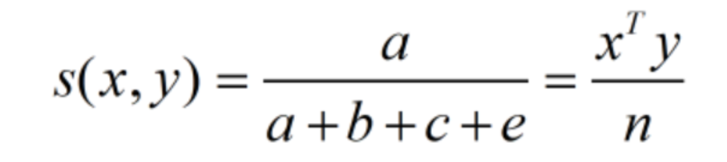
等于(1-1)匹配测度和所考差的特征数之比
Dice
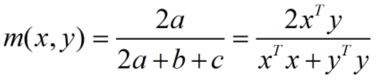
fisher判别原理
费歇（FISHER）判别思想是投影，使多维问题简化为一维问题来处理。选择一个适当的投影轴,使所有的样品点都投影到这个轴上得到一个投影值。对这个投影轴的方向的要求是：使每一类内的投影值所形成的类内离差尽可能小，而不同类间的投影值所形成的类间离差尽可能大。
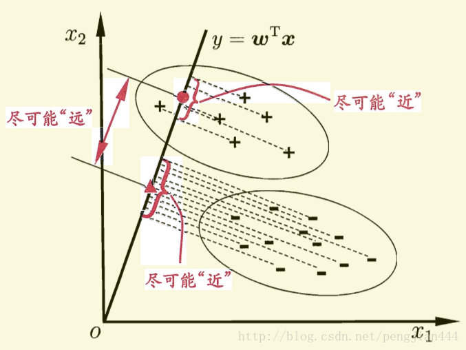
判别域界面方程
聚类分析的分类？
聚类分析有很多具体的算法,有的比较简单, 有的相对复杂和完善,但归纳起来就是三大类: 1、按最小距离原则简单聚类方法 2、按最小距离原则进行两类合并的方法 3、依据准则函数动态聚类方法 4 近邻函数法
C均值算法影响因素
受到取定的类别数和初始聚类中心的影响，通常结果只是局部最优的，但其 方法简单，结果尚令人满意，故应用较多
层次聚类算法例题
最小误判 最小损失
为何提出最小损失准则
从不同性质的错误会引起不同程度的损失这一考虑出发，我们有时宁肯扩大一些总 的错误率，也要使总的损失最小。这就提出 了最小损失准则的决策方法。
最小误判有几种形式
四种
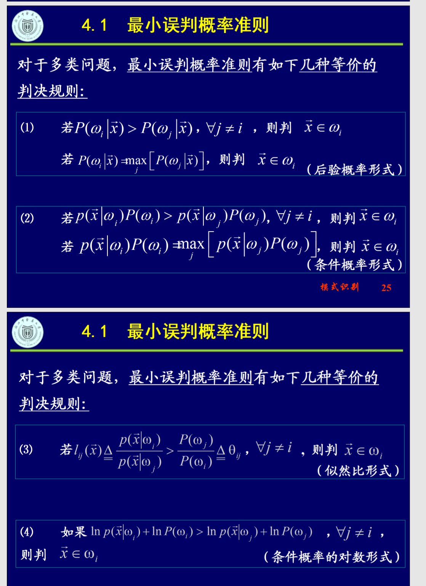
fisher主要计步骤与分类决策规则
1，把来自两类omega_1/omega_2的训练样本集X分成omega_1对应的子集X_1和与omega_2对应的子集X_2
2 计算m_i 即平均数
3 计算总的类内离差阵S_w
4 计算S_w的逆矩阵S_w^-1
5 按u = S^-{1}_{w}(m_1 - m_2)
6 计算m一弯和y_t
7 分类
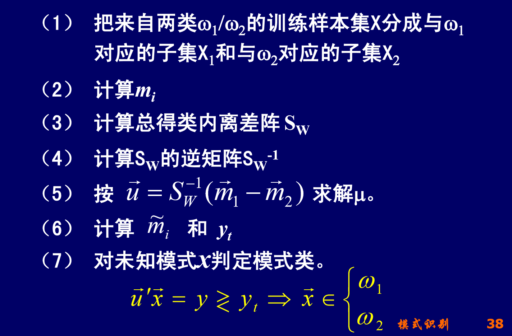
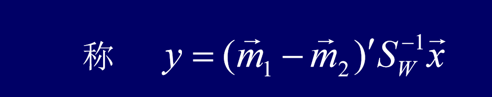
什么是线性判别函数
特征的所在子区域可根据它的特征值代入界面方程的线性函数d(x)后的取值正负而确定，表示界面的线性函数d(x)称为线性判别函数。
线性判决的几何意义
运用已知类别的训练样本进行学习产生若干个代数界面d(x）=0,将特征空间划分成一些互不重叠的子区域，使不同的模式类或其主体在不同的子区域中
判决分类结果好坏的标准 一句话
类内距离小， 类间距离大
最小损失和最小误判的关系
取0-1损失函数时，最小损失准则等价于最小误
判概率准则，此时的平均损失就是误判概率，使平
均损失最小即使误判概率最小。这也表明，最小误
判概率准则是最小损失准则的特例
最大似然估计和矩估计的概念
矩法估计是用样本(的统计)矩作为总体(理论)矩的估 值
最大似然估计需要知道概型，据估计不用
聚类分析的使用条件， 条状分布应该用什么算法， 团状用什么算法
团状用C均值， 条状用近邻 函数法
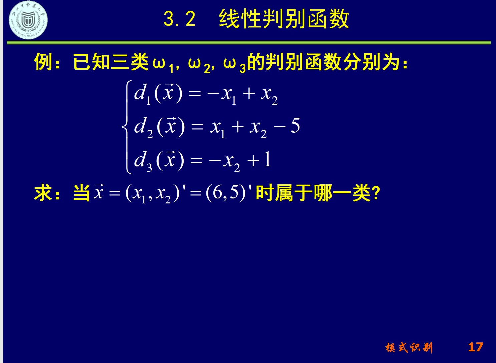
最小条件损失， 最小损失准则概念
按照两害相权取其轻原则，所采取的决策应是在统计意义上由于误判而蒙受的损失最小。
C均值重心选择 样本顺序影响因素，选类心的顺序
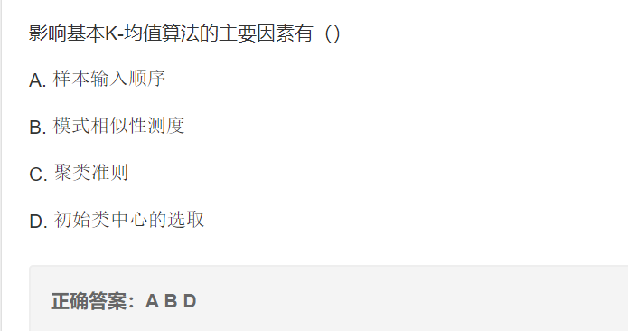
相似性测度 匹配距离测度相似测度 劳氏 戴氏
模式识别系统构成
特征提取 特征选择 学习和训练 分类识别
层次聚类，算法结果影响的因素
两类方法处理多分类
什么是模式识别，对象，特征空间。
模式识别概念
根据研究对象的特征或属性，运用一定的 分析算法认定其类别，并且分类识别的结果应 尽可能地符合真实。
特征矢量
一个分析对象的n个特征量测量值分别为x_1, x_2, … , x_n他们构成一个n维特征矢量x , x = (x_1, x_2, …, x_n)’
特征空间。
各种不同取值的 的全体构成了 维空间，这 个 维空间称为特征空间，
先验概率、后验概率、类概率密度

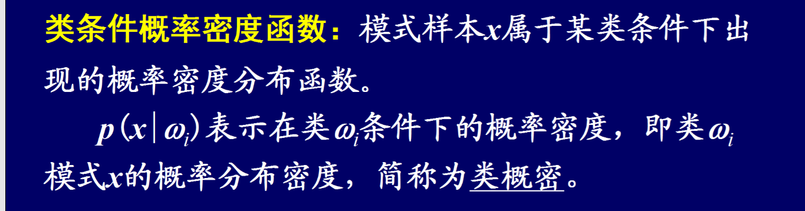
贝叶斯公式
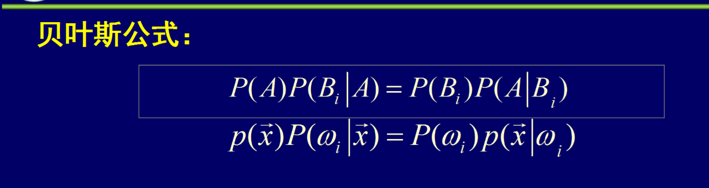
NP判决与最小损失，最小误判的异同
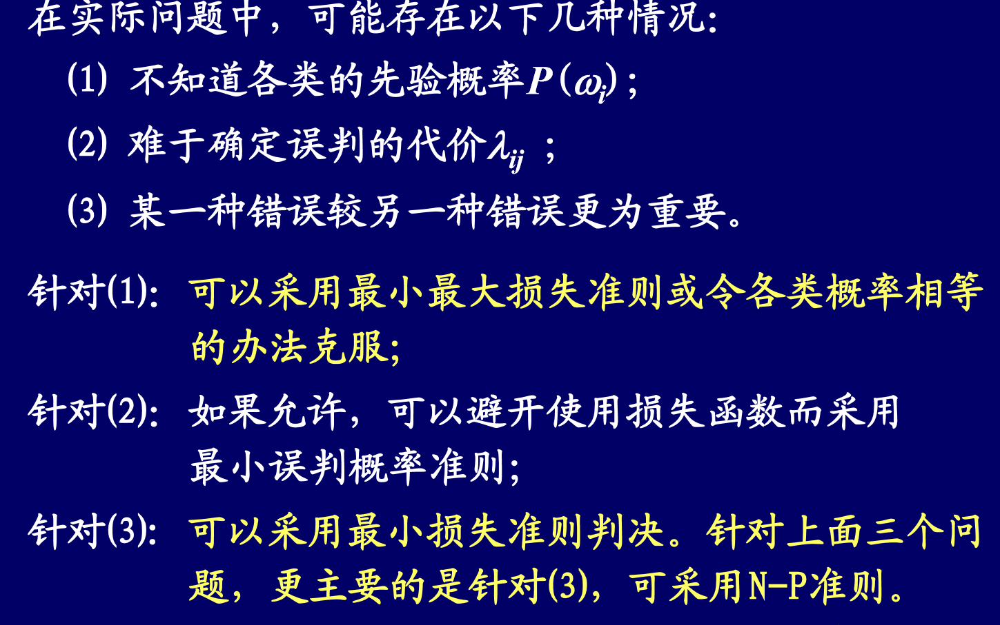
###